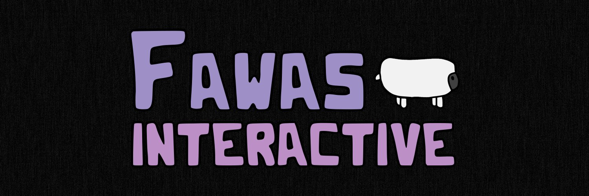
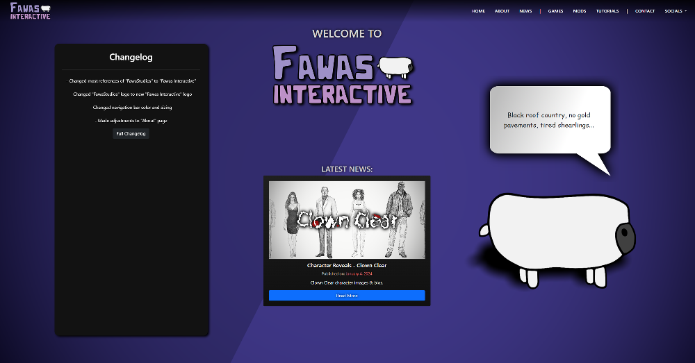
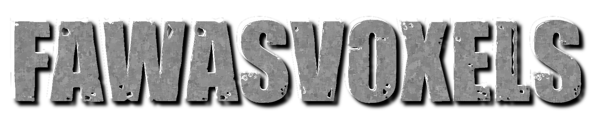

News & Dev | May 5, 2024 (8:22 PM EST)
Fawas Interactive & Game Updates
FawaStudios —> Fawas Interactive
After a lot of consideration, I’ve decided to change our name from “FawaStudios” to “Fawas Interactive”. There are a decent amount of reasons for this, but here are some of the main points.
- Double S’s: The S in “FawaS” + “Studios” reads as “Fawa” + “Studios”, and “Fawas Studios” would’ve still required a lot of rebranding (plus it’s still a little misleading for the same reason as the next point)
- Studios Suffix: “Studios” feels disingenuous considering there is only one “employee”, and obviously there aren’t multiple studios around the world. While the plan is for that to change eventually it’s still not the case now.
- Interactive Suffix: “Interactive” seems to work well considering I mostly produce interactive video games, but I’m still planning on working on non-game related ventures (like plain software down the line) which the suffix seems to logically encompass.
- Simple Transition: “Fawas Interactive” didn’t have many search results nor was it unavailable as a username on many social media websites, this means I was able to smoothly transition into the new name without having to spend years optimizing the search results or using names like “@RealFawasInt123”.
- The Future: This was brought up in point 3, but I think having FawaStudios separated into the two words Fawas and Interactive is just better long-term. People can potentially shorten it to just “Fawas”, and eventually if the company is registered as a corporation both names “Fawas Interactive” and “Fawas Corporation” can be used.
The social medias and website have already been changed to account for this. I still own the domain “https://www.fawastudios.com/” and plan to have it redirect to the new “https://www.fawasinteractive.com/” website, but I’ve encountered some strange technical issues that need to be resolved before that’s possible. Here’s an image of the rebranded website.
FawasVoxels Project

If you’ve been paying attention to my Discord server or YouTube channel (every other outlet has been temporarily abandoned) then you’ll know of a recent project I’ve been working on temporarily (or permanently, not sure yet) dubbed “FawasVoxels”.
This is my take on a voxel-based open world survival game, which would likely be a mix between “Minecraft” and “Terraria”, focusing on giving the player a lot of creative liberty through things like creating pixel-art paintings that can be hung up, mixing dozens of food types to create custom recipes, having every / most items placeable in the world. Some of this might not be implemented, as this is currently just being experimented with, but if I do continue with it this is the basic “vision”.
Whether or not it will be canceled or put on the back-burner has yet to be seen, but I’ve had many personal issues with the way development on similar games have been handled, and I’ve always wanted to try to create my own as an actual optimized, flexible project rather than a one off coding challenge.
Clown Clear

Clown Clear development was halted for a bit due to burnout, but while sleeping I did what most good developers do: opened my eyes violently and decided to get up exclusively to work on the game.
Maybe it’s due to some undiagnosed mental illness, or perhaps this is just a magical side effect of game development; but I proceeded to get a decent amount of work done and polished a system that had been worked on for a good while, with absolutely 0 interference from my brain telling me to give up.
The current plan is to do as much as possible in as short a time as possible: currently working on improving the animation system, but I really need to hustle so I can finally release the Steam page and possibly release a demo. I’ve also been in talks with people to help produce assets; so hopefully that will speed some things up or open up more possibilities faster.
Conclusion
That’s all for now, hopefully there will be a lot more to come soon. Might try to force myself to start making more blog posts, definitely with intervals less than 4 months at a time lol. Make sure to join my Discord server if you like video games or are interested in watching the Fawas Empire grow.